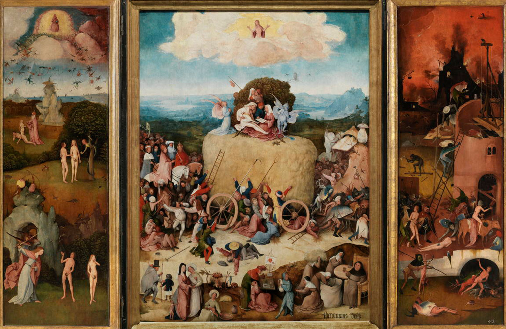
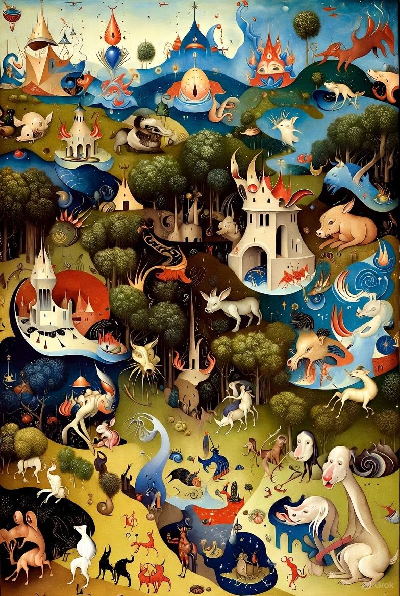

¿Qué es difícil de distinguir?
En la era de la inteligencia artificial, cada vez es más complicado diferenciar entre obras creadas por humanos y aquellas generadas por IA. Las herramientas de IA pueden imitar estilos artísticos históricos, crear nuevas composiciones musicales o generar fotografías hiperrealistas. Esta sección muestra ejemplos y reflexiona sobre los retos éticos y estéticos de esta convergencia.
Galería de Ejemplos
Obra generada por IA: técnica hiperrealista, imposible de diferenciar a simple vista.
Obra humana: el estilo recuerda al de un algoritmo de IA, pero fue creada manualmente.
IA puede recrear estilos clásicos, aquí se ve un ejemplo inspirado en impresionismo.

Obra realista humana.
Reflexión Crítica
La confusión entre obras humanas y artificiales nos obliga a replantear conceptos de creatividad y originalidad. Algunas preguntas clave:
- ¿Puede la IA crear “arte auténtico” o solo imita la creatividad humana?
- ¿Cómo afectará esto los derechos de autor y la propiedad intelectual?
- ¿Qué valoramos más: la intención del creador o el resultado final?
Estas reflexiones son fundamentales para artistas, consumidores y legisladores. La galería demuestra que la línea entre humano y máquina es cada vez más borrosa.